Префектура Окинава · остров Окинава и Мияко · еда
Что едят сами окинавцы: тэбити, островной тофу, ямайская кухня и сладости Мияко
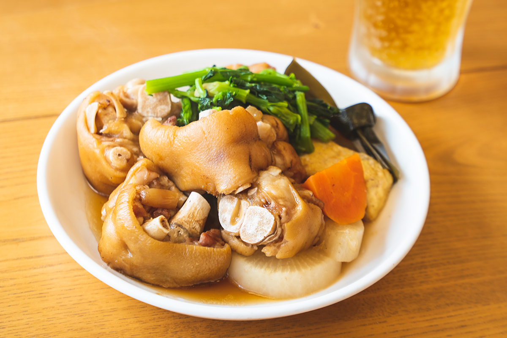
Кухня Окинавы очень разная: тут и привычные с детства домашние блюда, и окинавская соба, и кухни мира, которые прижились на островах по-своему. Винодел, шоколатье и хозяйка лавки с острова Ирабу рассказывают, куда ходят есть сами.
Остров Окинава
Тэбити, тэмпура и тофу, который едят без соевого соуса
Первая рассказчица делает вино из сикуваса, маленького окинавского цитруса. Когда она работала в кондитерской отрасли и искала сырьё, то узнала, что по всей префектуре остаётся невостребованный сок сикуваса. Она взяла на себя проект, который начинала команда разработчиков, и довела до готового продукта фруктовое вино Occi. Вино делают на винодельне в торговой галерее «Парк-авеню» в центре города Окинава, и в 2023 году она готовилась начать продажи.
Блюдо, которое она готова есть каждый день, это тэбити, тушёные свиные ножки, в закусочной «Идзуми сёкудо». Их медленно томят в соусе, рецепт которого передаётся с самого открытия. Вкус глубокий, но при этом чистый и не тяжёлый, а зелень, комбу и дайкон к ним подобраны точно. Тэбити хороши и с рисом, и с пивом. Порция большая, поэтому есть набор навынос, но, по словам рассказчицы, он всегда исчезает так быстро, что хочется добавки. Известна закусочная и тэбити-собой. Днём здесь длинная очередь, ждать придётся обязательно, но еду можно взять с собой.
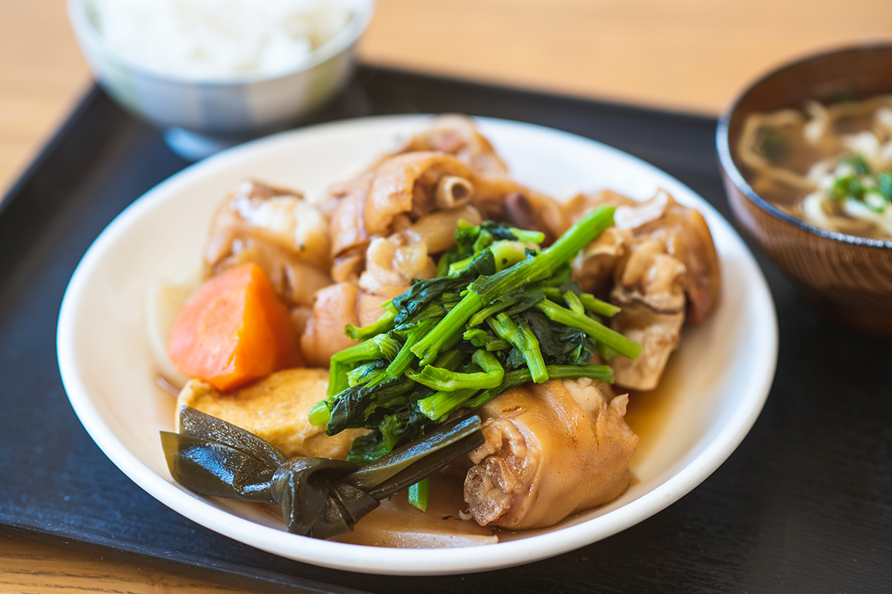
Несколько раз в месяц она ездит на фермерский рынок в Итомане, на юге острова Окинава, за сезонными окинавскими овощами. На обратном пути, если хочется перекусить, заходит в «Тэмпура Фукуя». Ларёк работает только по субботам, воскресеньям и праздникам, а окинавская тэмпура здесь в пышном тесте и с большим количеством овощей. Особенно ей нравится тэмпура из горчичных листьев и корня лопуха: горьковатая и вкусная, от неё трудно оторваться. На той же территории стоит «Оппа айсу», и там окинавская дзэндзай, сладкий десерт из фасоли кинтоки, с мягкими рисовыми шариками. Сахара в ней немного. Если заказать дзэндзай с чёрным сахаром, сверху бесплатно посыплют кинако, обжаренной соевой мукой.
Малоизвестный, но хороший адрес, по её словам, это суши-бар «Юдзу-но хана» в Нахе: здесь готовят из сезонной окинавской рыбы и овощей.
Окинавцы очень любят островной тофу, симадофу, и за ним рассказчица советует ехать в «Тофуя Сигэити», где особенно строго относятся к воде. Тофу здесь большой, плотный и с насыщенным вкусом. Его можно есть просто так, даже без соевого соуса, можно жарить как стейк или класть в тямпуру. Стоит попробовать и юси-дофу, нежный несформованный тофу, и соевое молоко. На Окинаве много больших и маленьких тофу-мастерских, и у каждой свой характер.
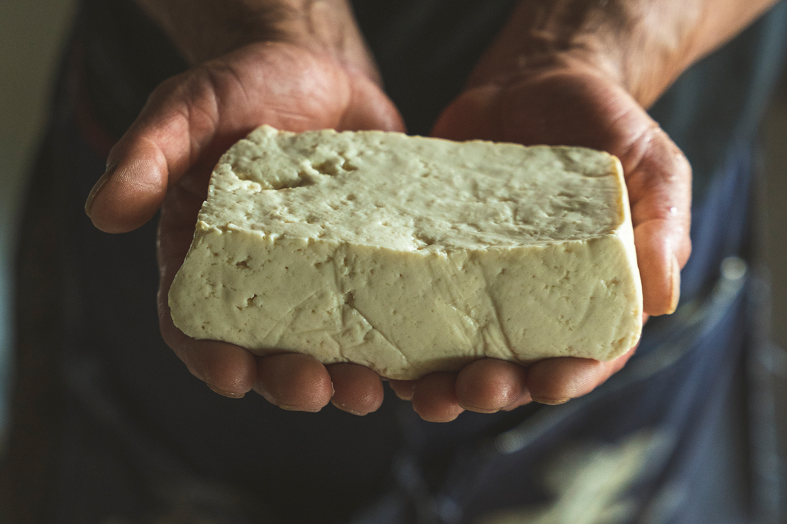
Вечером в Нахе она идёт в «Офукуро», заведение, где подают только одэн, тушёные в бульоне закуски, в окинавском варианте. Есть формат «ешь и пей сколько хочешь»: двухчасовой курс стоил от 2 500 иен в 2023 году. Горячий одэн можно заказывать даже по одному кусочку. Сразу после открытия стойку занимают служащие после работы. На стойке выставлены и домашние закуски, такие, какие готовит мама, и их разбирают, едва поставят.
Что везти домой
За подарками рассказчица советует фермерский рынок «Уру-марше» в Уруме: окинавские овощи и фрукты, сладости, продукты переработки и даже бэнто, здесь есть всё. Уже просто разглядывать разноцветную окинавскую рыбу интересно. В обед рынок полон служащих и домохозяек из соседних кварталов.
Для сладкоежек классический подарок это лимонный кекс «Хирами» из oHacorté, магазина фруктовых тартов. Хирами это другое название сикуваса, и цитрус есть и в тесте, и в глазури. Аромат раскрывается с первого укуса. Удобно, что у магазина есть точка в аэропорту.
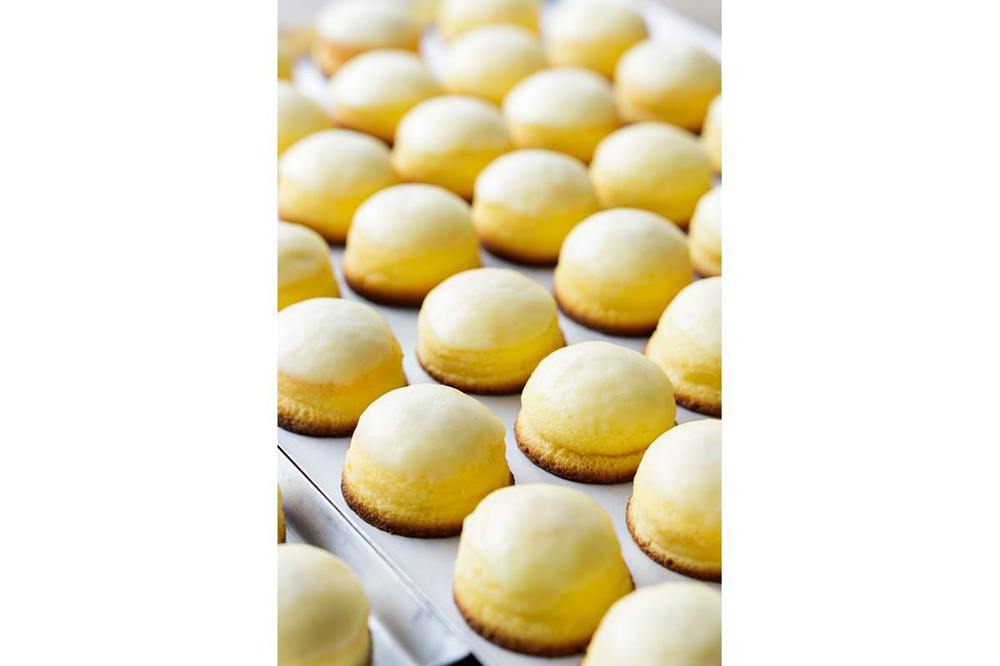
Среди множества сортов чёрного сахара она выделяет мелкие кусочки с острова Тарама: они легко тают во рту. Их она обязательно берёт с собой, когда уезжает с Окинавы. А сэмбэй «Умэ-когамэ» от «Тамаки сэйка», рисовое печенье со вкусом сливы умэ, стоят недорого, и многие покупают их сразу пачками. По её словам, кто попробовал по её совету, обязательно возвращается за ними снова.
«Идзуми сёкудо»
- Адрес
- префектура Окинава, город Окинава, Икэхара, 4-1-14
- Телефон
- +81 98-923-1503
«Тэмпура Фукуя»
- Адрес
- префектура Окинава, Итоман, Нисидзаки, 4-20, парковка фермерского рынка Итомана
- Телефон
- +81 70-5495-7246
- Часы работы
- только суббота, воскресенье и праздники
«Оппа айсу», магазин в Итомане
- Адрес
- префектура Окинава, Итоман, Нисидзаки, 4-20, у входа фермерского рынка Итомана
- Телефон
- +81 70-5410-0074
Суши-бар «Юдзу-но хана»
- Адрес
- префектура Окинава, Наха, Макаби, 2-5-1
- Телефон
- +81 98-886-8792
«Тофуя Сигэити»
- Адрес
- префектура Окинава, Гинован, Какадзу, 4-6-27
- Телефон
- +81 98-870-2755
«Офукуро»
- Адрес
- префектура Окинава, Наха, Кумодзи, 1-8-7
- Телефон
- +81 98-868-6721
- Цены / Вход
- «ешь и пей сколько хочешь», 2 часа, от 2 500 иен (2023 год)
«Уру-марше»
- Адрес
- префектура Окинава, Урума, Маэхара, 183-2
- Телефон
- +81 98-923-3911
oHacorté, главный магазин в Минатогаве
- Адрес
- префектура Окинава, Урасоэ, Минатогава, 2-17-1, № 18
- Телефон
- +81 98-875-2129
Чёрный сахар с острова Тарама («Кокуто хомпо Какинохана»)
- Адрес
- префектура Окинава, Урума, Судзаки, 12-18
- Телефон
- +81 98-921-2506
«Тамаки сэйка»
- Адрес
- префектура Окинава, уезд Симадзири, Хаэбару, Канэгусуку, 651-1
- Телефон
- +81 98-889-1335
Наха и центр
Авамори, соба и ямайская курица
Второй рассказчик основал TIMELESS CHOCOLATE (о ней есть отдельная статья): шоколад здесь делают только из какао-бобов собственной обжарки и сахарного тростника. Он родом из Иокогамы, вырос на музыке, искусстве и кухне разных народов, после университета уехал в США, потом в Австралию и получил там лицензию бариста. В 2014 году он переехал на Окинаву, а с 2015 года ведёт на островах собственные плантации сахарного тростника и какао вместе с партнёрами.
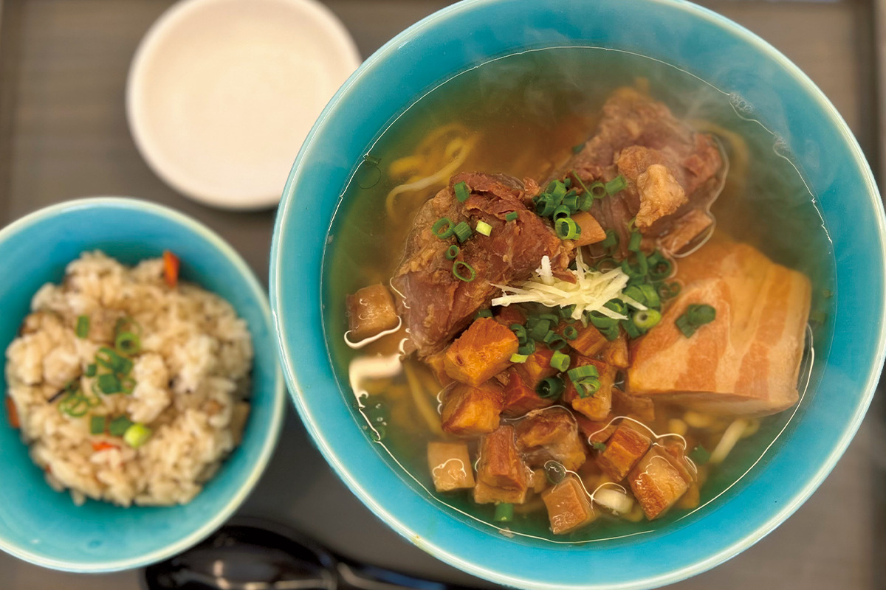
Авамори, окинавская рисовая водка, поразил его ещё до переезда, и он считает, что в нём есть что-то общее с шоколадом и кофе, которыми он занимается. Каждый день его вдохновляет «Мидзухо сюдзо», старейшая винокурня Нахи. По его словам, её современный авамори и напитки на его основе со временем заметно повлияют на рынок не только в Японии, но и за рубежом.
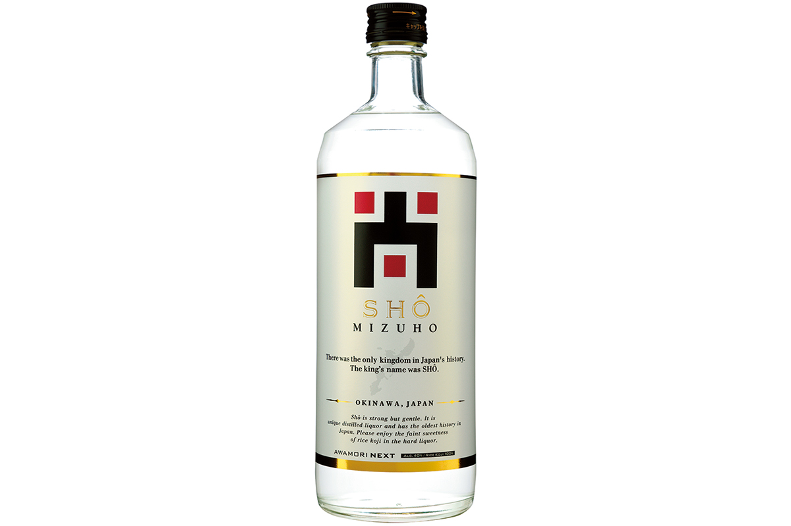
Окинавская соба тоже всё время меняется, и он внимательно за ней следит. Хозяин OKINAWA SOBA EIBUN даже после того, как у заведения появились очереди, не держится за привычное и всё время пробует новое. По словам рассказчика, это очень круто. В Kintiti soba варят собу аккуратно и без усилителей вкуса. Её глава к тому же выращивает окинавскую пшеницу и, по мнению рассказчика, работает на будущее островов. Подробнее об обоих заведениях рассказано в статье об окинавской собе.
Когда он впервые приехал на Окинаву, старший товарищ отвёл его в ямайский ресторан FLEX Bar & Grill. Атмосфера там совсем не японская, а блюда готовят по настоящим ямайским рецептам. Рассказчик сам бывал на Ямайке и говорит, что здесь вкуснее и даже аутентичнее, чем в местных заведениях.
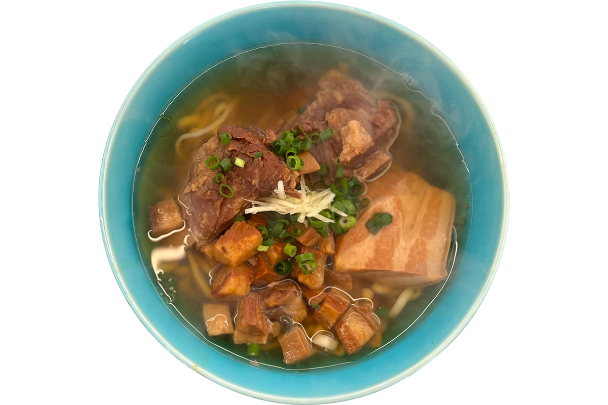
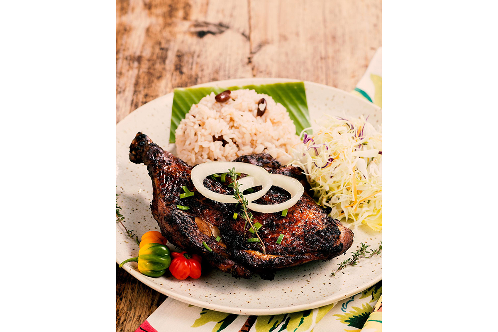
Друзьям, которые приезжают на Окинаву, он показывает места, где чувствуется сегодняшний остров. Например, El Lequio: первый на Окинаве бар SG Group, компании, известной в Японии и за рубежом. Бармены мирового уровня готовят здесь коктейли из окинавских продуктов. Туристам, по его словам, понравится и рынок «Хаппи моа», где видно, что сейчас в сезоне. О нём тоже есть отдельная статья.
Ещё он с уверенностью советует напитки из LIQUID THE STORE, магазина всего, что связано с питьём, мясные деликатесы TESIO, какао-продукты TIMELESS CHOCOLATE, а также сиропы-кордиалы и масло из маракуйи от ателье-кафе-бара, где хорошо знают окинавские продукты.
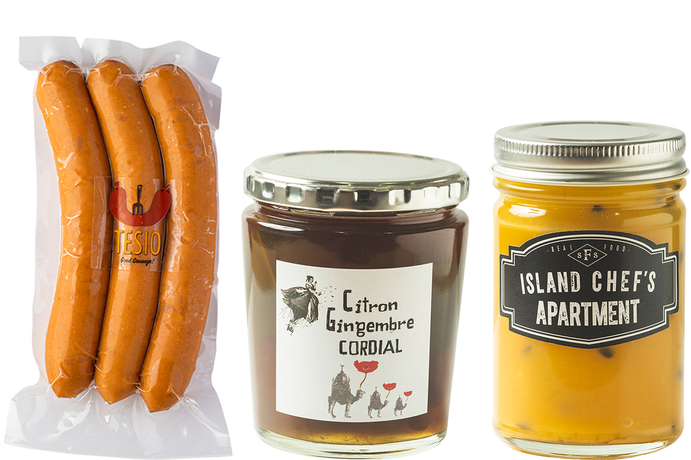
Сам рассказчик открыл ремесленную пекарню MILL by TIMELESS, где экспериментирует с хлебом и выпечкой на собственных дрожжах.
«Мидзухо сюдзо»
- Адрес
- префектура Окинава, Наха, Сюри-Суэёси, 4-5-16
- Телефон
- +81 98-885-0121
OKINAWA SOBA EIBUN
- Адрес
- префектура Окинава, Наха, Цубоя, 1-5-14
- Телефон
- +81 98-914-3882
Kintiti soba, главное заведение в Ёмитане
- Адрес
- префектура Окинава, уезд Накагами, Ёмитан, Кина, 201
- Телефон
- +81 98-958-5896
FLEX Bar & Grill
- Адрес
- префектура Окинава, уезд Накагами, Тятан, Тятан, 2-20-5
- Телефон
- +81 98-926-0470
El Lequio
- Адрес
- префектура Окинава, Наха, Асато, 1-3-3, здание «Асато»
- Телефон
- +81 98-975-9674
LIQUID THE STORE
- Адрес
- префектура Окинава, Наха, Цубоя, 1-1-21, 1-й этаж
- Телефон
- +81 98-988-3607
Мияко
Рыбная тэмпура, суши и мороженое с манго
Третья рассказчица держит лавку «Нанахоси сётэн» на острове Ирабу, который входит в город Мияко. Там продаются вещи из местных материалов, а также одежда и мелочи, собранные по всему миру. Девиз лавки: «Маленькое счастье в каждый день». Ещё она поёт окинавские народные песни в минъё-изакаях и отелях острова, а 23 июня 2023 года выпустила диск «utai» со своими песнями.
Ирабу это маленький остров, который соединён мостом с Мияко. Здесь развито рыболовство, и свежая вкусная рыба всегда под рукой. Главная еда острова, по её словам, это рыбная тэмпура из «Хамагути суйсан». Если позвонить заранее, её приготовят к вашему приходу, и она всегда будет «атикоко», то есть с пылу с жару. Кусок белой рыбы большой, кляр очень пышный, и наедаешься быстро. Фирменную смесь для тэмпуры здесь продают отдельно, и она есть почти в каждом доме на острове.
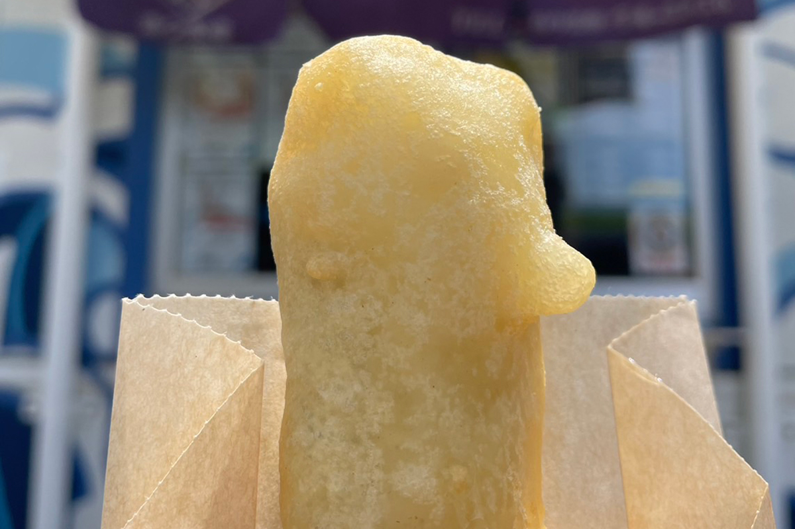
«Суши Кэн» это уютный семейный суши-бар, известный на всём острове свежим сашими и аккуратно слепленными суши. Есть и много отдельных блюд. Хозяин «Нангоку китчин Пайнми» рыбак, и здесь готовят блюда разных кухонь в основном из рыбы и других продуктов острова. Рецепты он узнал в путешествиях и от путешественников, а воплощает их из местного сырья.
В кафе «Сиавасэя» вегетарианское карри готовит хозяйка, которая преподаёт йогу. Она изучала аюрведу в Индии, а овощи и специи для карри растят на Мияко без пестицидов и химических удобрений. Карри красивое на вид и мягкое на вкус. Тоже с островными овощами работает «Симагохан Аттакая», где популярны сытные сбалансированные обеды. К ним можно выбрать белый рис или пророщенный бурый рис, а рис в глиняном горшке варят только после заказа.
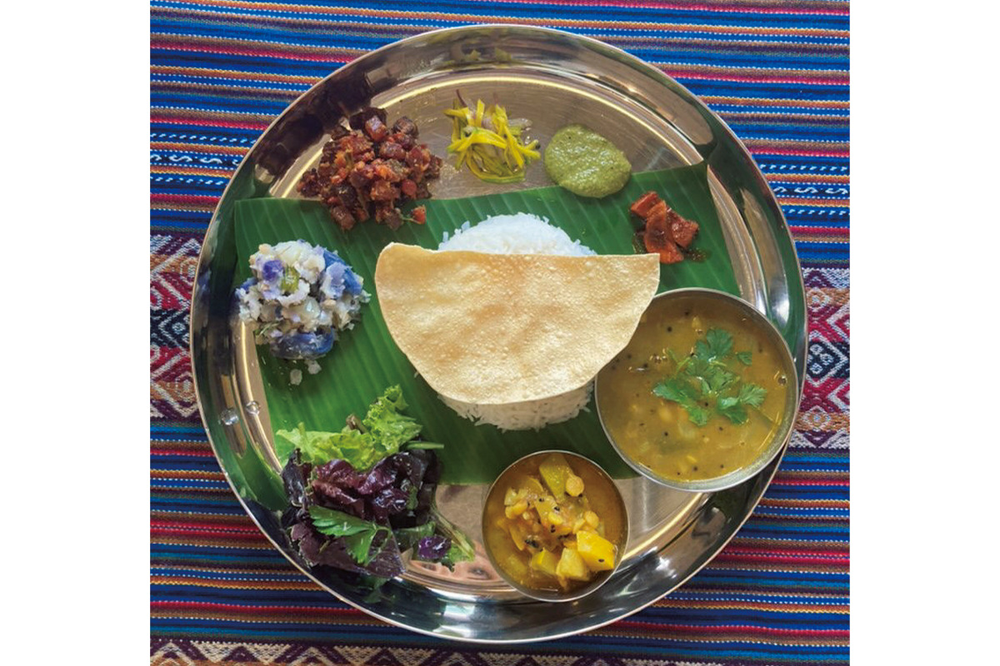
Сладкое на Мияко
Когда рассказчица показывает остров гостям, она обязательно заезжает в «Ютопиа фаму Миякодзима». В мягкое мороженое здесь щедро добавляют тропические фрукты, и летом можно выбрать манго, маракую, питайю или банан сансяку. Вафельный рожок домашний и хрустящий.
Только по субботам и воскресеньям работает «Гуругуру мэнъя», где продают лапшу, мелочи и какигори, тёртый лёд. Сезонных фруктов в какигори кладут так много, что одной порции хватает, чтобы наесться, а выглядит она ярко и мило.
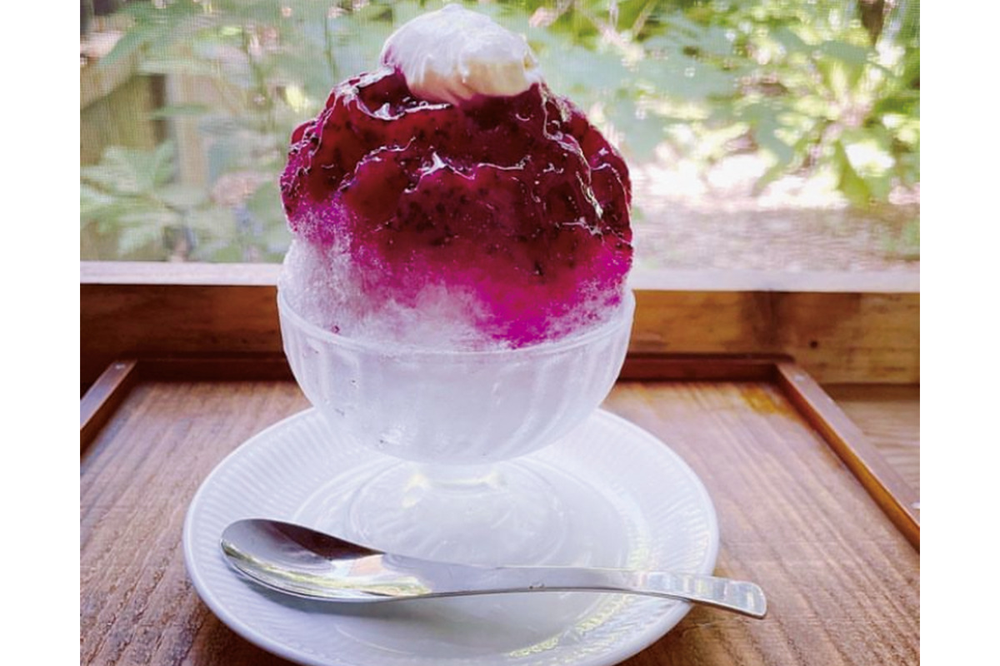
В джелатерии RICCO gelato делают мороженое из манго, маракуйи, трав и даже авамори от местных производителей, и вкусы можно сочетать как угодно.
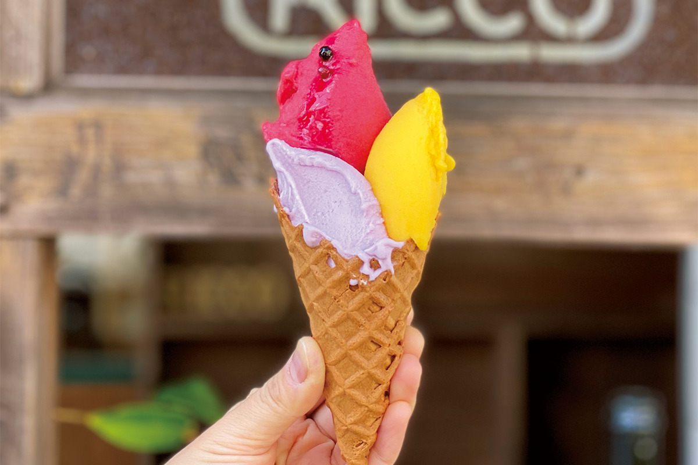
Кастелла из «Нагасакия», магазина японских и западных сладостей, неизменно популярна. Её делают из простых продуктов с патокой сахарного тростника. Она плотная и тяжёлая, а вкус у неё старый, знакомый, такой, что не забыть. А в мастерской «Нисибару-я» продают разноцветную сушёную лапшу с горькой тыквой гоя, питайей и другими добавками: красивый и приятный подарок.
«Хамагути суйсан»
- Адрес
- префектура Окинава, Мияко, Ирабу, Кунинака, 431-1
- Телефон
- +81 980-74-5056
«Суши Кэн»
- Адрес
- префектура Окинава, Мияко, Ирабу, Кунинака, 124
- Телефон
- +81 980-78-3078
«Нангоку китчин Пайнми»
- Адрес
- префектура Окинава, Мияко, Ирабу, Нагахама, 1470-2
- Телефон
- +81 90-6303-0088
Кафе «Сиавасэя»
- Адрес
- префектура Окинава, Мияко, Хирара, Нисидзато, 529-1
- Телефон
- +81 980-79-5139
«Симагохан Аттакая»
- Адрес
- префектура Окинава, Мияко, Симодзи, Сугама, 473-1
- Телефон
- +81 70-3800-0100
«Ютопиа фаму Миякодзима»
- Адрес
- префектура Окинава, Мияко, Уэно, Миягуни, 1714-2
- Телефон
- +81 980-76-2949
«Гуругуру мэнъя»
- Адрес
- префектура Окинава, Мияко, Гусукубэ, Томори, 306-5
- Телефон
- +81 70-8521-8961
- Часы работы
- только суббота и воскресенье
RICCO gelato
- Адрес
- префектура Окинава, Мияко, Хирара, Симодзато, 550
- Сайт
- ricco-gelato.com
«Нагасакия»
- Адрес
- префектура Окинава, Мияко, Ирабу, Кунинака, 85-3
- Телефон
- +81 980-78-3917
Мастерская «Нисибару-я»
- Адрес
- префектура Окинава, Мияко, Гусукубэ, Томори, 306-5
- Телефон
- +81 90-5943-4902
Фото: Цунэтака Симабукуро.